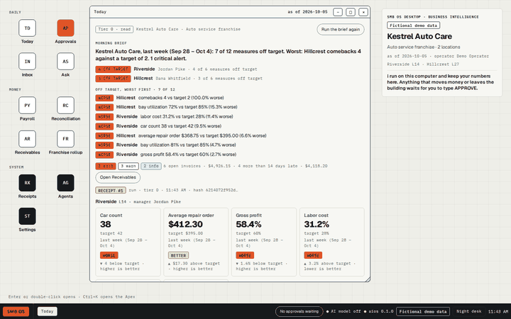

SMB OS Desktop · Business Intelligence
It is business intelligence for running a multi-location franchise: today's numbers per location, a payroll check, bank reconciliation, the franchise rollup, and an approvals gate for anything that moves money. This window is too narrow for it. Widen the window, or open it on a computer.

aios: NO_SIGNAL · not yet read
Fictional demo data